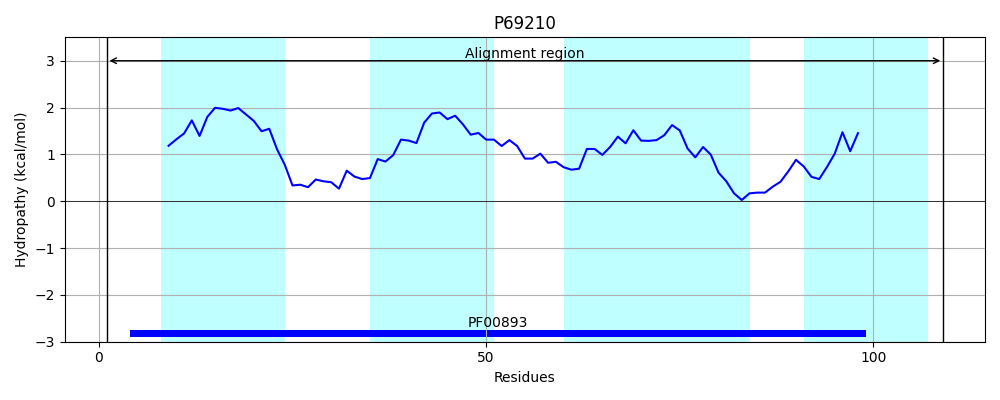
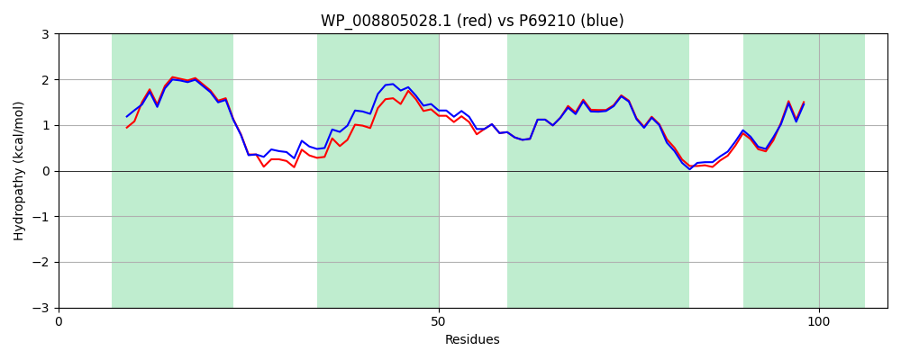

WP_008805028.1
Hit Accession: P69210
Hit TCID: 2.A.7.1.9
Hit Description: gnl|BL_ORD_ID|11256 gnl|TC-DB|P69210|2.A.7.1.9 Spermidine export protein mdtI OS=Escherichia coli (strain K12) GN=mdtI PE=1 SV=1
Mach Len: 109
e:0.000000
Query TMS Count : 4
Hit TMS Count: 4
TMS-Overlap Score: 3.800000
Predicted Substrates:CHEBI:8984;sodium dodecyl sulfate, CHEBI:23614;deoxycholate, CHEBI:9218;spermidine
BLAST Alignment:
| Protein Hydropathy Plots: | |
|---|---|
 |  |
Pairwise Alignment-Hydropathy Plot: | |
|  | |